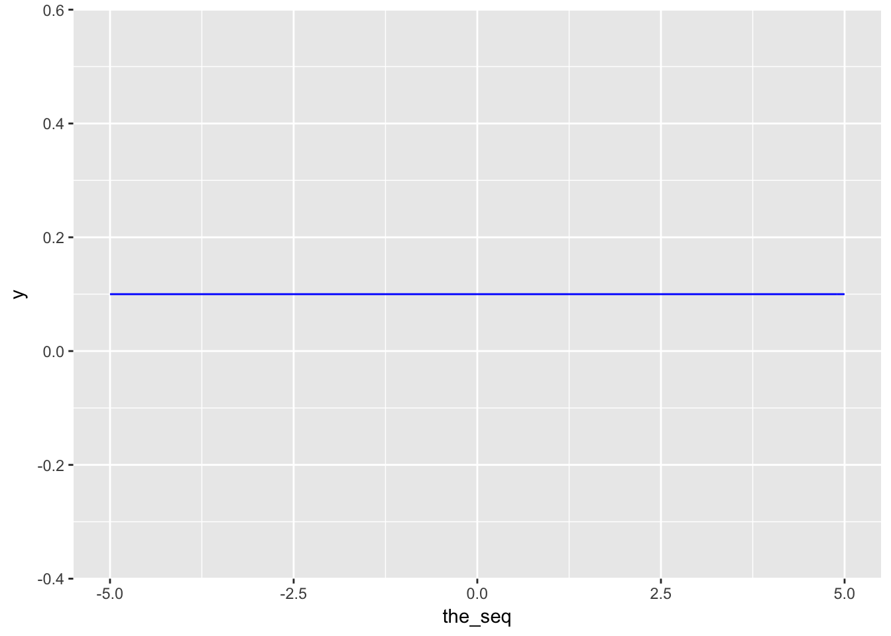
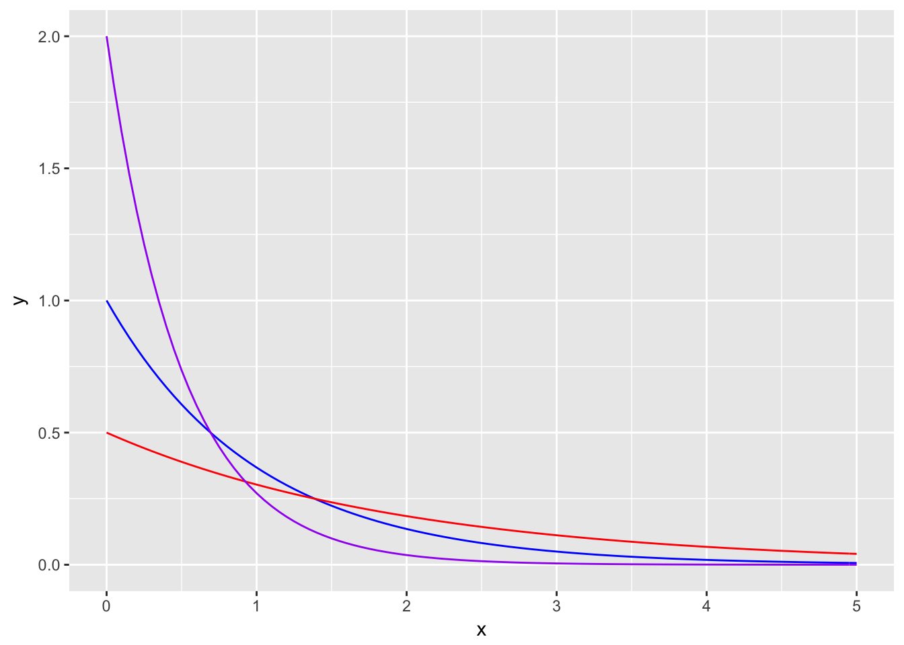
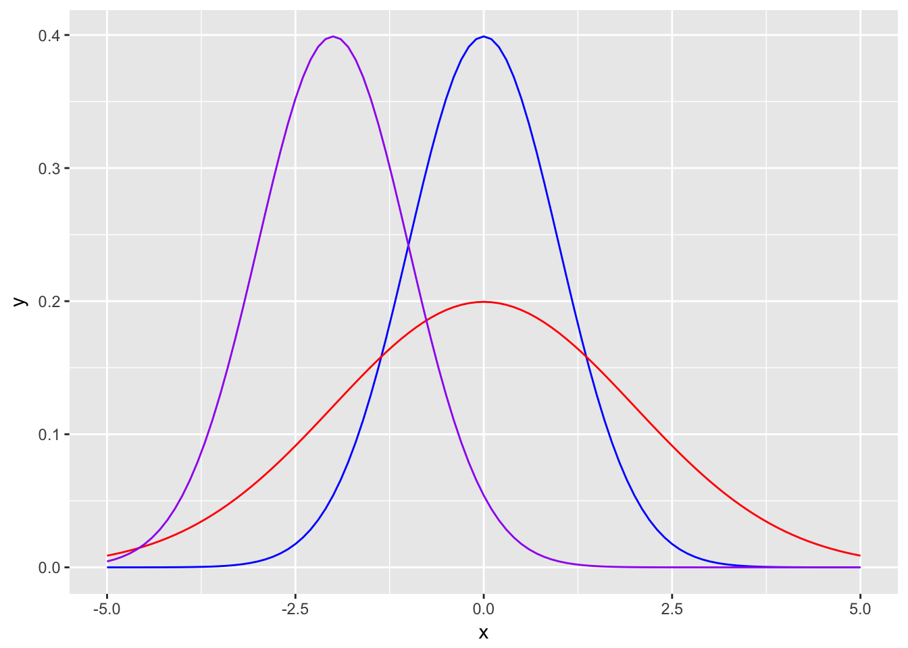

Chapter 7 Some Continuous Distributions
So far we had only seen discrete distributions which only specific values have positive probability values. Now we are going to see continuous variables where each real value defined in the domain of the distribution has a positive probability.
In this class we are going to see uniform, exponential, normal, gamma and weibull distributions. Of those, we will see uniform, exponential and normal distributions in detail.
7.1 Uniform Distribution
Given an interval \([a,b]\), each value within the interval has equal probability in uniform distribution.
\[X \sim U[a,b]\]
Density: \(f(X) = \dfrac{1}{b-a}\)
CDF: \(F(X \le x) = \dfrac{x-a}{b-a}\)
\(E[X] = (b+a)/2\)
\(V(X) = 1/12(b-a)^2\)
the_seq <- seq(-5,5,length.out=1000)
ggplot(data=data.frame(the_seq),aes(x=the_seq)) +
stat_function(fun=dunif,args=list(min=-5,max=5),color="blue")
Example: Suppose there is a lecture that can end anytime between 11:00 and 13:00. What is the probability that it ends before 12:30?
Solution: There are 120 minutes betweeen 11:00 (a) and 13:00 (b) and 90 minutes between 11:00 (a) and 12:30 (x).
\[P(X \le 90) = 90/120 = 3/4\]
7.2 Exponential Distribution
Exponential distribution is generally used to measure time before an event happens. Common examples are component (i.e. light bulb) lifetime and job processing (i.e. queue serving). It is closely related to Poisson distribution. While Poisson is used to estimate number of events in a given time period, Exponential distribution estimates the time of an event.
Density: \(f(X) = \lambda e^{-\lambda x}\)
CDF: \(F(X \le x) = 1 - e^{-\lambda x}\)
\(E[X] = 1/\lambda\)
\(V(X) = 1/\lambda^2\)
Exponential distribution has memoryless property.
\[P(X > t + s | X > t) = \dfrac{P(X > t + s)}{P(X > t)} = \dfrac{e^{-\lambda (t+s)}}{e^{-\lambda t}} = e^{-\lambda s}\]
Note: Exponential distribution is frequently used in maintenance themed questions (e.g. “A machine breaks down…”). Though, memoryless property in exponential distribution might seem a bit off as it kind of assumes replenished starting point and no “wear and tear effect”. Don’t forget these are mathematical questions and applications might differ.
the_seq <- seq(0,5,length.out=1000)
ggplot(data=data.frame(x=the_seq),aes(x=x)) +
stat_function(fun=dexp,color="blue") +
stat_function(fun=dexp,args=list(rate=0.5),color="red") +
stat_function(fun=dexp,args=list(rate=2),color="purple")
Example: Lifetime of a bulb is expected to be 10,000 hours, estimated with exponential distribution. What is the probability that the bulb will fail in the first 3,000 hours?
\[\lambda = 1/10^5\]
\[P(X < 3,000) = 1 - e^{-\lambda x} = 1 - e^{- 10^{-5}*3*10^3} = 0.0296\]
Example: Using the same properties of the question above, what is the probability that the bulb will last more than 7,000 hours if it didn’t fail in the first 5,000 hours?
From memoryless property.
\[P(X > 7000 | X > 5000) = P(X > 5000 + 2000)/P(X>5000) = P(X > 2000) = e^{-\lambda x} = 0.9801987\]
7.3 Normal Distribution
It is the most popular continuous distribution with uniform distribution and it has many applications. Also several discrete and continuous distributions (i.e. Binomial, t and chi-squared) converge to normal distribution when data size increases. It is also called Gaussian distribution. Many miscalculations or failed prediction happen because people approximate empirical distributions to normal distribution. It has two main parameters mean (location) \(\mu\) and standard deviation (scale) \(\sigma\).
\[X \sim N(\mu,\sigma)\]
Density: \(f(X) = \dfrac{1}{\sqrt{2\pi}\sigma}e^{-\dfrac{1}{2\sigma^2}(x-\mu)^2}\)
\(E[X] = \mu\)
\(V(X) = \sigma^2\)
If \(X \sim N(0,1)\), it is called standard normal distribution.
the_seq <- seq(-5,5,length.out=1000)
ggplot(data=data.frame(x=the_seq),aes(x=x)) +
stat_function(fun=dnorm,color="blue") +
stat_function(fun=dnorm,args=list(sd=2),color="red") +
stat_function(fun=dnorm,args=list(mean=-2),color="purple")
7.3.1 Standard Normal Distribution
Standard Normal Distribution is a special case of normal distribution with mean (\(\mu\)) 0 and standard deviation (\(\sigma\)) 1 \(X ~ N(0,1)\). Probability calculations in normal distribution is usually done with converting the parameters to standard normal parameters and finding the probabilities from the standard normal table (or z-table). Conversion to standard normal is done as follows. (You can find the z-table on course website.)
\[\dfrac{X-\mu}{\sigma}\]
Example: In a population height of the individuals are normally distributed with mean 170cm and standard deviation 5cm. What is the probability of a randomly selected person’s height is 160cm or lower?
Solution: \(P(X < 160; \mu = 170, \sigma = 5) = P(X < \dfrac{160 - 170}{5}) = \phi(-2) = 0.0228\).
7.4 Gamma Distribution
First, let’s define the gamma function.
\[\Gamma(n) = \int_0^\infty x^{n-1}e^{-x}dx\]
By extensions there are some interesting properties.
\[\Gamma(n) = (n-1)\Gamma(n-1)\]
If n is a positive integer then \[\Gamma(n) = (n-1)!\].
You can use Gamma Distribution in reliability calculations with multiple components.
Density: \(f(X) = \dfrac{\lambda}{\Gamma(r)}(\lambda x)^{r-1} e^{-\lambda x}, x > 0\).
\(E[X] = r/\lambda\)
\(V(X) = r/\lambda^2\)
Exponential distribution is a special case of Gamma distribution with \(r=1\).
7.5 Weibull Distribution
Some application of Weibull distribution are to estimate the time for failure in multi component electrical or mechanical systems, and modelling wind speed.
Density: \(f(X) = \dfrac{\beta}{\delta}\left(\dfrac{x - \gamma}{\delta}\right)^{\beta-1} e^{-\left(\dfrac{x - \gamma}{\delta}\right)^\beta}\).
CDF: \(F(X) = 1 - e^{-\left(\dfrac{x - \gamma}{\delta}\right)^\beta}\)
\(E[X] = \gamma + \delta \Gamma(1 + 1/\beta)\)
\(V(X) = \delta^2\left[\Gamma\left(1+\dfrac{2}{\beta}\right) - \left[\Gamma\left(1 + \dfrac{1}{\beta}\right)\right]^2 \right]\)
7.6 R Functions
R has predefined functions for virtually all distributions. Just write ?Distributions to the console.
7.7 Mini In-Class Exercises
These exercises are at will attempt questions. They will not be graded, you will not turn in any submission.
Waiters in Çengelköy Çınaraltı Cafe, goes on a tea serving tour every 5 minutes. What is the probability that a newly arrived customer waits between 2 and 3 minutes?
The waiting time at Çengelköy Börekçisi queue is exponentially distributed with a mean of 10 minutes. What is the probability that a customer would wait less than 8 minutes?
Suppose Z is a standard normal distributed random variable (\(Z ~ N(0,1)\)).
- \(P(-0.2 \le Z \le 0.4) = ?\)
- If \(P(Z < k) = 0.0987\) what is \(k\)?
- If \(P(|Z| < k) = 0.95\) what is \(k\)?
Walpole, Ronald E., Raymond H. Myers, Sharon L. Myers, and Keying Ye. 2012. Probability and Statistics for Engineers and Scientists. 9th ed. Boston, MA: Pearson.